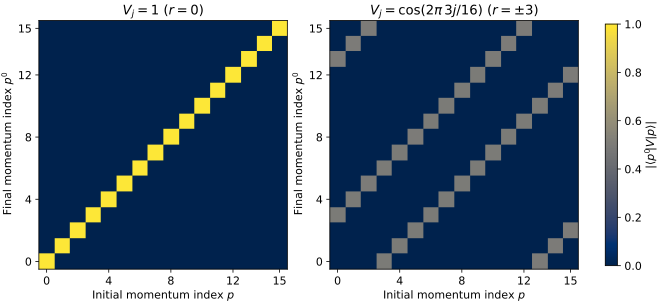

HefeiNAMD Series - Part I
When Does Inter-k NAC Vanish?
A statement in a momentum-space nonadiabatic-dynamics tutorial initially sounds paradoxical: Bloch states at different crystal momenta are orthogonal, so their nonadiabatic couplings cannot be calculated. Does this mean that real electrons cannot scatter between different momenta? The missing condition is the spatial periodicity of the nuclear motion. A trajectory that preserves the primitive translations has exactly zero time-derivative coupling between different primitive crystal momenta. A finite-wavevector lattice distortion supplies the momentum that this restricted trajectory excludes.
Part 0 records the practical preparation of a HefeiNAMD workshop. The scientific purpose of this series is to connect that calculation chain to the electronic representation, the nuclear motion, and the transitions that the calculation can represent. This first technical note follows one question from the definition of nonadiabatic coupling (NAC), through a translation selection rule, to the electron-phonon coupling (EPC) Hamiltonian. It also separates exact symmetry statements from the first-order and harmonic approximations used to build a practical model.
The general NAC and overlap formulas and fewest-switches population-flow construction already have their own articles. Here the new ingredient is crystal momentum. The momentum-space method of Zheng et al. provides the immediate context: its moving adiabatic basis is replaced by a fixed equilibrium Bloch basis, with nuclear motion entering through an EPC Hamiltonian.
1. Begin with the time-derivative coupling
Let the nuclei follow a differentiable prescribed path \(\mathbf R(t)\), and let the instantaneous electronic eigenstates satisfy
We use \(d_{mn}\) for the scalar coupling along that path, rather than for the full nuclear-coordinate derivative vector:
This quantity has units of inverse time. Differentiating the eigenvalue equation and projecting onto a distinct state gives
The quotient requires nondegenerate states and a differentiable choice of eigenvectors. At a degeneracy, one must treat the coupled subspace; dividing by a vanishing gap is not a prescription for the coupling. The numerator identifies the relevant question: what spatial symmetry does the time-dependent perturbation \(\dot H_e\) have?
2. Orthogonality alone does not prove zero NAC
Two orthogonal states can rotate while remaining orthogonal. For example, in a fixed orthonormal two-state basis, define
Their overlap is always zero, but their derivative overlap is
More generally, differentiating orthonormality proves \(d_{mn}=-d_{nm}^{*}\), not \(d_{mn}=0\). Thus Bloch-state orthogonality needs an additional argument before it can say anything about NAC.
3. The strict zero follows from a symmetry preserved in time
Take a fixed lattice and require the electronic Hamiltonian to retain every primitive translation \(\mathbf L\) at every time. Choose symmetry-adapted instantaneous states, with crystal momenta fixed modulo primitive reciprocal lattice vectors:
For a nonlocal Hamiltonian, the first condition means commutation with the lattice-translation operator. Because the translation and its Bloch phase are time independent, differentiating the second relation leaves \(\partial_t\psi_{n\mathbf k}\) in the same momentum sector. Translating the full-crystal inner product therefore yields
If the two momenta differ modulo a reciprocal lattice vector, some translation has a phase different from one. Consequently,
This statement is exact within the stated trajectory model. It does not require a harmonic approximation or a nonzero energy gap: symmetry keeps the sectors separate even if energies in different sectors cross. At degeneracies we retain a basis adapted to translation symmetry. Arbitrary rotations mixing degenerate momentum sectors can obscure their labels without creating physical transfer between the sectors.
The inner product is over a Born-von Kármán periodic crystal, not an arbitrary integral of two cell-periodic factors over one primitive cell. An overlap code returns zero for these cross-sector overlaps, including adjacent-time overlaps along the same symmetry-preserving path. “Cannot be calculated” is therefore better read as “this trajectory contains no such coupling to extract.” A different overlap formula cannot recover a displacement pattern that was never present.
4. Which nuclear motions did the primitive cell exclude?
Write the displacement of atom \(\kappa\) in primitive cell \(l\) as \(\mathbf u_{l\kappa}(t)\). Primitive-cell periodic molecular dynamics (MD) enforces the same displacement in every repeated cell:
Only primitive \(\mathbf q=0\) displacement patterns are available. Internal optical motion can still change bands and mix states at the same \(\mathbf k\). Anharmonic forces can change that motion in time, but cannot introduce a missing spatial wavelength. Adding more electronic \(\mathbf k\) points to a primitive-cell MD calculation improves Brillouin-zone sampling; it does not add finite-\(\mathbf q\) nuclear degrees of freedom.
A larger periodic supercell changes this restriction. Its allowed primitive wavevectors obey
Several nonzero primitive \(\mathbf q\) values can satisfy this condition. They fold to supercell \(\Gamma\), just as several primitive electronic momenta fold into one supercell momentum sector. A distorted supercell can mix those components because it need not retain the smaller primitive translations. A supercell-\(\Gamma\) calculation therefore does not imply primitive-\(\Gamma\)-only phonons.
There is also a distinction between the full NAC vector and its contraction with a permitted velocity. A derivative with respect to one independently displaced atom can break primitive periodicity. Its matrix elements need not vanish between reference Bloch momenta. The strict zero above concerns the time derivative along a trajectory constrained to preserve the translations.
5. A finite-q displacement creates a finite-q perturbation
To expose the missing spatial patterns, expand displacements in an orthonormal reference normal-mode basis. With \(N\) primitive cells, atomic masses \(M_\kappa\), Cartesian component \(\alpha\), mode branch \(\nu\), and normalized polarization vectors \(e_{\kappa\alpha,\nu}(\mathbf q)\), choose
Here \(Q\) is a mass-weighted coordinate, with units of square root of mass times length. A compatible eigenvector gauge gives \(Q_{-\mathbf q,\nu}=Q_{\mathbf q\nu}^{*}\), so the atomic displacement is real. Decomposition into a complete reference basis does not itself force harmonic time evolution.
Now make a separate approximation: expand the electronic Hamiltonian to first order in those displacements, evaluated at the equilibrium structure \(\mathbf R_0\):
Substitution groups the atomic derivatives by wavevector:
For a local potential, its derivative at cell \(l\) is a translated copy of the derivative at cell zero. Reindexing that sum shows
Thus a finite-\(\mathbf q\) perturbation is a Bloch-like operator, rather than a primitive-periodic scalar. The corresponding operator covariance gives the same result for nonlocal potentials. In a compatible gauge \(A_{-\mathbf q,\nu}=A_{\mathbf q\nu}^{\dagger}\); paired coordinates ensure a Hermitian \(\Delta H\).
6. Derive the momentum selection rule
Use equilibrium Bloch states \(|\psi^0_{n\mathbf k}\rangle\), normalized over the \(N\)-cell crystal, with reference energies defined by
The matrix element of one perturbation has a cell sum proportional to
The discrete Fourier sum vanishes unless its phase is periodic on the primitive lattice. Therefore,
This is a necessary momentum selection rule, not a guarantee that the surviving element is nonzero. Polarization, orbital character, spin, or other symmetries can still forbid it. For \(\mathbf q=0\), it returns the strict same-sector rule. A finite-\(\mathbf q\) distortion permits a different primitive momentum because the perturbation carries the difference.
At higher orders, products of displacement patterns carry sums of their wavevectors. These give multiphonon momentum rules. The particular single-\(\mathbf q\) expression above is the first-order electronic expansion, whereas conservation of crystal momentum in the full translation-invariant electron-lattice problem has a broader scope.
7. Relate EPC to NAC without mixing electronic bases
For a stable reference mode of nonzero frequency, introduce a dimensionless coordinate \(X_{\mathbf q\nu}\) and define
In this convention \(\ell\) is a mass-weighted zero-point amplitude, not a length; \(g\) has units of energy. Other conventions introduce a reference mass and a length-valued normal coordinate. Mixing those conventions would put an incorrect mass factor in the Hamiltonian. Exact zero-frequency translations require separate treatment rather than insertion into this definition.
The reference-basis electronic Hamiltonian becomes
The \(1/\sqrt N\) belongs to the chosen finite-crystal normal-coordinate normalization. The same EPC can be written as a primitive-cell matrix element of the cell-periodic perturbation, as in the EPW definitions. In either form, frequencies and eigenvectors alone do not determine the electronic response: the derivative of the self-consistent electronic Hamiltonian, hence \(g\), is also required.
At the reference structure, the nondegenerate derivative identity from Section 1 now gives
This is the instantaneous adiabatic derivative coupling evaluated at \(\mathbf R_0\), or the leading local expression for states continued away from it. It is not the derivative coupling of the fixed reference basis. Once a finite-\(\mathbf q\) distortion breaks primitive translations, primitive \(\mathbf k\) generally ceases to be an exact quantum number of each instantaneous eigenstate.
The two coefficient equations make the distinction explicit. In a moving instantaneous eigenbasis,
In the fixed equilibrium Bloch basis,
The fixed basis has zero basis time derivative by construction. Its off-diagonal Hamiltonian elements transfer amplitude. With complete bases and the same Hamiltonian, these are equivalent representations of electronic evolution. Truncating bands or linearizing the Hamiltonian introduces additional approximation errors. A fixed equilibrium basis is useful as a local diabatic representation; that does not assert the existence of a globally exact diabatic basis.
8. Allowed momentum transfer is not yet a transition rate
For any fixed orthonormal basis with Hermitian \(H\), the Schrödinger equation gives the population derivative
A surviving matrix element permits coherent population flow; the phase and time history determine the actual transfer. A stochastic surface-hopping rule is another layer of the dynamics, rather than a consequence of the momentum selection rule alone.
Quantizing the harmonic reference coordinates replaces \(X_{\mathbf q\nu}\) by \(b_{\mathbf q\nu}+b^\dagger_{-\mathbf q\nu}\), giving the familiar first-order interaction
For an electron momentum change \(+\mathbf q\), these two terms absorb a phonon at \(\mathbf q\) or emit one at \(-\mathbf q\). In the long-time, weak-coupling harmonic limit, their transition probabilities select electron energy changes \(+\hbar\omega_{\mathbf q\nu}\) or \(-\hbar\omega_{-\mathbf q\nu}\), respectively. For reciprocal phonon spectra the paired frequencies are equal. Energy resonance comes from time integration; it was not used in the spatial selection-rule proof. A classical prescribed trajectory does not automatically impose a quantized single-phonon energy change on every surface hop.
9. A reproducible finite-lattice check
A 16-site periodic scalar model isolates the Fourier cancellation. Let the site index be \(j\), with normalized plane waves and dimensionless perturbation matrix
A uniform perturbation \(V_j=1\) gives only \(M_{pp}=1\). A real cosine \(V_j=\cos(2\pi\,3j/16)\) contains both signs of the wavevector: it gives \(M_{p\pm3,p}=1/2\), with indices taken modulo 16, and zero elsewhere. The two signs are required by a real displacement; a single complex Fourier component carries only one sign.

The linked calculation agrees with the analytic matrices to better than \(10^{-13}\) in maximum absolute element error and verifies Hermiticity. This is a numerical check of the selection rule. It contains no bands, atomic forces, NAC denominator, electronic propagation, or relaxation lifetime, and therefore does not validate a material calculation or a surface-hopping algorithm.
Run python assets/code/hefeinamd_k_selection.py from the website repository root with NumPy and Matplotlib installed. The script regenerates the figure and its small numerical attachments:
10. What this means for a HefeiNAMD calculation
Before interpreting a zero cross-momentum coupling, identify the periodicity of the actual nuclear path, rather than just the electronic k-point mesh. Then identify whether the states are instantaneous adiabatic eigenstates or fixed equilibrium Bloch states. Those two checks determine which coupling object is meaningful.
| Construction | Represented nuclear motion | Consequence for primitive momentum |
|---|---|---|
| Primitive-cell periodic MD with any electronic k mesh | Primitive \(q=0\) patterns | Time-derivative NAC between distinct k sectors is exactly zero under the stated symmetry assumptions. |
| Periodic supercell MD | Primitive q values commensurate with the supercell | Folded primitive components can mix within one supercell momentum sector. |
| Reference-basis EPC dynamics | Explicit \(Q_{\mathbf q\nu}(t)\) on a chosen q mesh | Off-diagonal Hamiltonian elements connect k and k+q when the EPC is allowed. |
The EPC route needs reference electronic energies, mode eigenvectors and normalization, electronic derivatives \(g\), and an actual time history of the mode coordinates. A phonon dispersion supplies frequencies; it does not supply the complete electronic Hamiltonian or a real-time trajectory. Prescribing harmonic motion, using an anharmonic MD path, or introducing a nuclear quantum dynamics approximation are separate decisions.
Likewise, the classical-path approximation specifies that nuclear motion is supplied without the selected carrier's feedback. It does not cause the cross-k zero: the decisive condition here is translation symmetry. Keeping these assumptions separate explains why increasing the number of k points, adding anharmonic forces within a primitive cell, or changing a hopping rule cannot restore the spatial modes absent from that cell.
Sources and further reading
- Z. Zheng et al., Ab initio Real-Time Quantum Dynamics of Charge Carriers in Momentum Space, especially Eqs. (4)–(10) for the moving-basis NAC, fixed equilibrium basis, and EPC Hamiltonian. Journal article: Nature Computational Science (2023).
- Author's momentum-space NAMD code and tutorials.
- EPW theory: electron-phonon matrix elements, for the cell-periodic perturbation and normalization conventions.
- Related foundations on this site: NAC/HST formulas, FSSH, and quantum correlations required by electronic transitions.